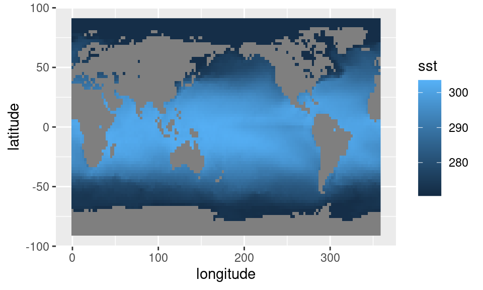
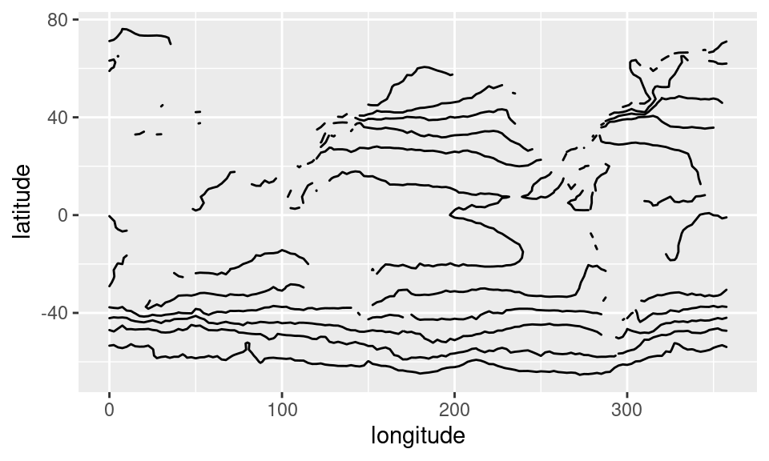
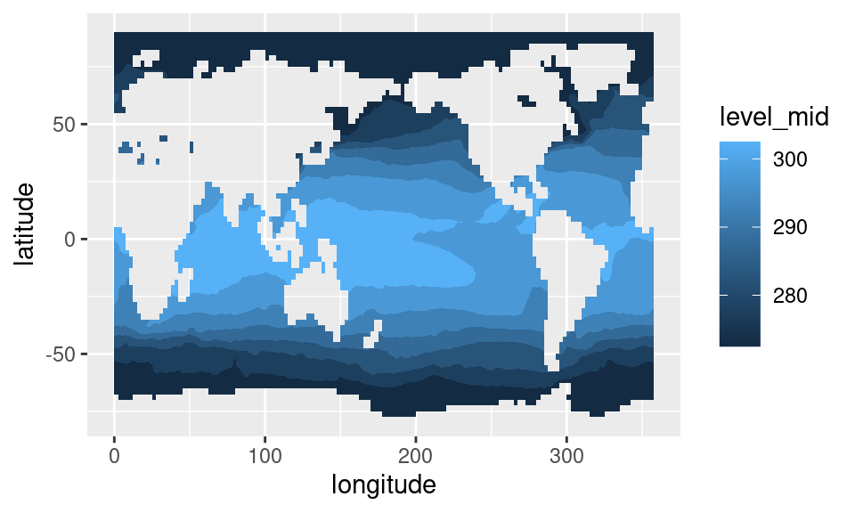
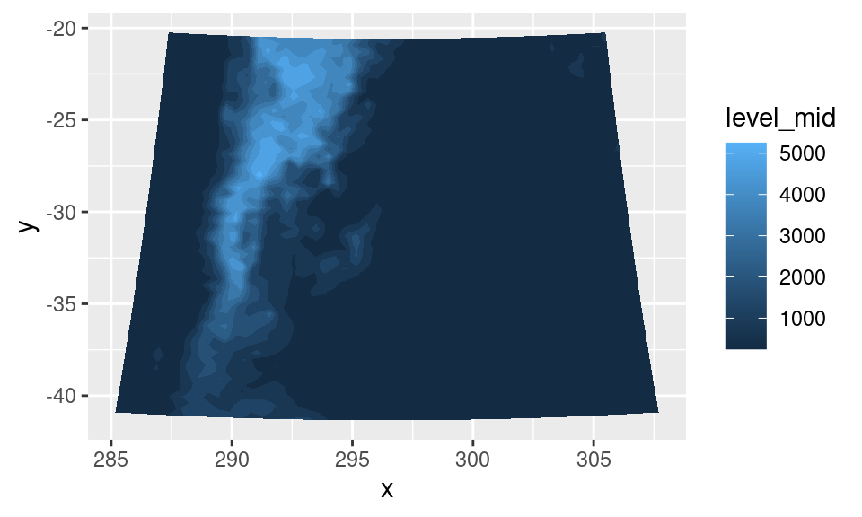
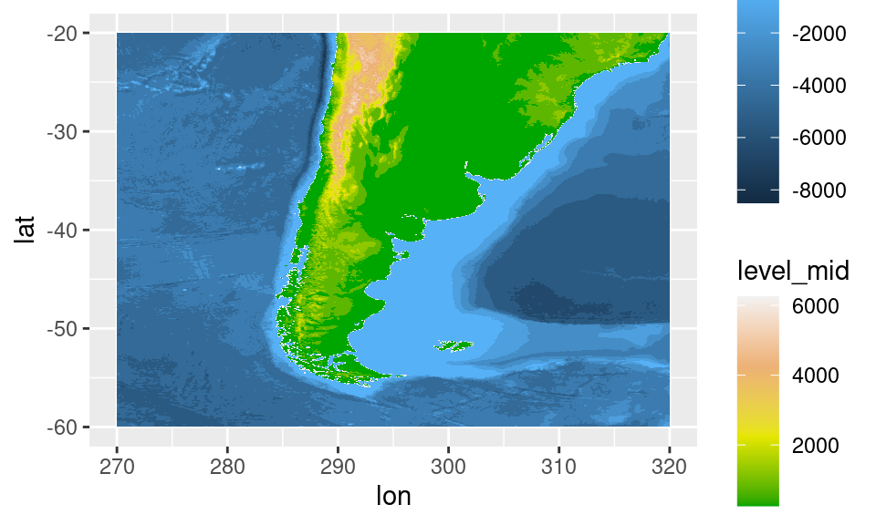
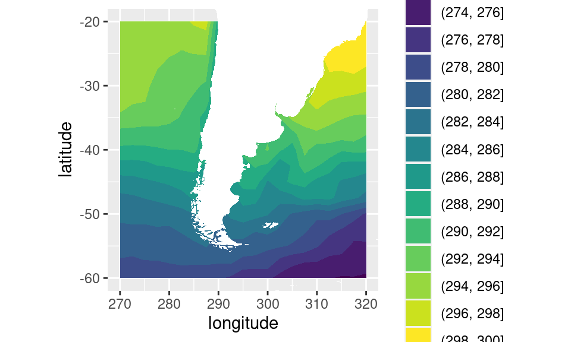
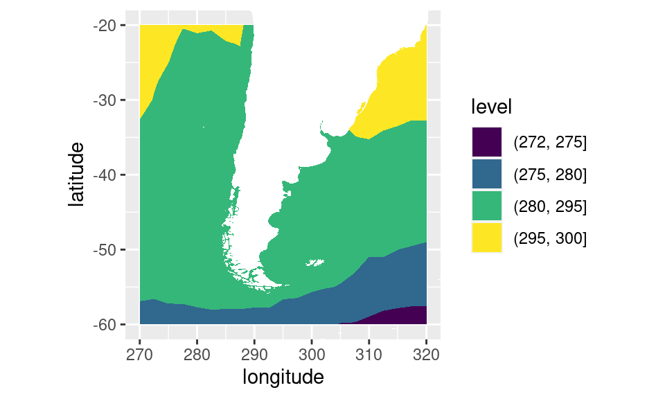

Graficando
Ahora que tenés los datos en forma de tabla, todo lo que queda es usar las mismas herramientas que usarías para trabajar con cualquier otro tipo de dato.
# Cargo los paquetes necesarios
library(magrittr)
library(ggplot2)
library(dplyr)
library(data.table)
library(metR)
# Leo los datos
#
sst <- ReadNetCDF("datos/temperatura_mar.nc", vars = "sst")
# Me quedo con un solo campo, para graficar
sst1 <- sst[time == time[1]]Ya vimos una forma simple de graficar este tipo de datos usando geom_raster():
sst1 %>%
ggplot(aes(longitude, latitude)) +
geom_raster(aes(fill = sst)) 
Con geom_raster(), cada punto de grilla es representado como un rectángulo cuyo color de relleno se mapea al valor de la variable; extremadamente simple.
Otra forma de mostrar este tipo de campos es usando contornos con geom_contour(). A mí me gusta usar metR::geom_contour2() porque usa contornos negros por default y tiene otras funcionalidades.
sst1 %>%
ggplot(aes(longitude, latitude)) +
geom_contour2(aes(z = sst)) 
El problema es que ahora perdemos los contienentes gratis y no sabemos los valores. Podemos obtener un resultado intermedio usando contornos llenos con metR::geom_contour_fill() (de nuevo, ggplot2 tiene un geom_contour_filled() pero yo prefiero los defaults y otras funcionalidades de geom_contour_fill()).
sst1 %>%
ggplot(aes(longitude, latitude)) +
geom_contour_fill(aes(z = sst)) 
En este punto estaría bueno tener no tener los continentes pixelados. El paquete rnaturalearth tiene datos de costas y países, pero para no tener que instalar otro paquete extra, vamos a usar la función map_data() de ggplot2.
ggplot() +
geom_polygon(data = map_data("world2"), aes(long, lat, group = group),
fill = "white")Ahora podemos poner eso encima del gráfico anterior.
mapa <- geom_polygon(data = map_data("world2"), aes(long, lat, group = group),
fill = "white", inherit.aes = FALSE)sst1 %>%
ggplot(aes(longitude, latitude)) +
geom_contour_fill(aes(z = sst)) +
mapaEl problema es que todavía tenemos las costas pixeladas. Una forma de resolver esto es rellenando esos pixels con un valor razonable. metR::geom_contour_fill() tiene el argumento na.fill que si es TRUE, interpola los datos faltantes:
sst1 %>%
ggplot(aes(longitude, latitude)) +
geom_contour_fill(aes(z = sst), na.fill = TRUE) Sabemos que los datos bien adentro de los continentes no tienen sentido, pero si lo que vamos a hacer es taparlos con el mapa, ¿a quién le importa?
sst1 %>%
ggplot(aes(longitude, latitude)) +
geom_contour_fill(aes(z = sst), na.fill = TRUE) +
mapa## Usando proyecciones
Hasta ahora usamos datos grillados en una grilla regular en longitud y latitude, pero no todos los datos son así. Por ejemplo el dataset de ejemplo surface tiene datos de altura del centro de Argentina.
head(surface)## lon lat height x y
## 1: -74.83386 -40.91083 0.0000 -960000 -1160000
## 2: -74.36743 -40.94587 0.0000 -920000 -1160000
## 3: -73.90057 -40.97941 276.4575 -880000 -1160000
## 4: -73.43341 -41.01149 182.4261 -840000 -1160000
## 5: -72.96585 -41.04207 123.7324 -800000 -1160000
## 6: -72.49799 -41.07118 770.1770 -760000 -1160000Vemos que tiene datos de altura en longitud y latitud. Vamos a ver qué pinta tienen:
surface %>%
ggplot(aes(lon, lat)) +
geom_point(aes(colour = height))
Claramente esto no es un cuadrado, pero si se fijan bien, hay una cierta regularidad en la ubicación de los puntos. Es porque la grilla sí es regular, pero en otra proyección:
surface %>%
ggplot(aes(x, y)) +
geom_raster(aes(fill = height))En esta grilla regular podemos calcular contornos sin dolor.
surface %>%
ggplot(aes(x, y)) +
geom_contour_fill(aes(z = height))Una forma de definir esa proyección es con una “proj-string”; un texto que define de qué proyección se trata y cuáles son sus parámetros. (Aunque notar que este paradigma ya se quedó viejo) ¿De donde sale esta string? ¡De los metadatos! Si tu archivo netCDF está bien hecho, parte de sus metadatos va a ser la proyección. En este caso, el “metadato” es este documento y la proj-string es la siguiente:
proj_string <- paste0("+proj=lcc +lat_1=-30.9659996032715 +lat_2=-30.9659996032715 +lat_0=-30.9660034179688 +lon_0=296.432998657227 +a=6370000 +b=6370000 +over")Si metemos esto directamente al argumento proj de geom_contour_fill() podemos pasar de las coordenadas proyectadas x/y a lon/lat.
surface %>%
ggplot(aes(x, y)) +
geom_contour_fill(aes(z = height), proj = proj_string)
Y ahora se puede superponer estos datos de topografía a los datos de temperatura de la superficie del mar:
sst1 %>%
.[longitude %between% c(270, 320) & latitude %between% c(-60, -20)] %>%
ggplot(aes(longitude, latitude)) +
geom_contour_fill(aes(z = sst), na.fill = TRUE) +
mapa +
geom_contour_fill(aes(x, y, z = height), proj = proj_string, data = surface) +
coord_quickmap(xlim = c(270, 320), ylim = c(-60, -20))  Pero ahí hay un problema, que es que estamos graficando dos variables muy distintas usando la misma escala de colores. Una forma de plotear varias escalas de colores en un mismo ggplot es usando el paquete ggnewscale.
sst1 %>%
.[longitude %between% c(270, 320) & latitude %between% c(-60, -20)] %>%
ggplot(aes(longitude, latitude)) +
geom_contour_fill(aes(z = sst), na.fill = TRUE) +
mapa +
ggnewscale::new_scale_fill() +
geom_contour_fill(aes(x, y, z = height), proj = proj_string, data = surface) +
scale_fill_continuous(low = "gray20", high = "white", guide = "none") +
coord_quickmap(xlim = c(270, 320), ylim = c(-60, -20)) 
Contornos iluminados
Sólo porque amo los contornos iluminados, no puedo dejar de mencionar geom_contour_tanaka(), que agrega un efecto de relieve hermoso en los contornos.
sst1 %>%
ggplot(aes(longitude, latitude)) +
geom_contour_fill(aes(z = sst), na.fill = TRUE) +
geom_contour_tanaka(aes(z = sst), na.fill = TRUE) +
mapa